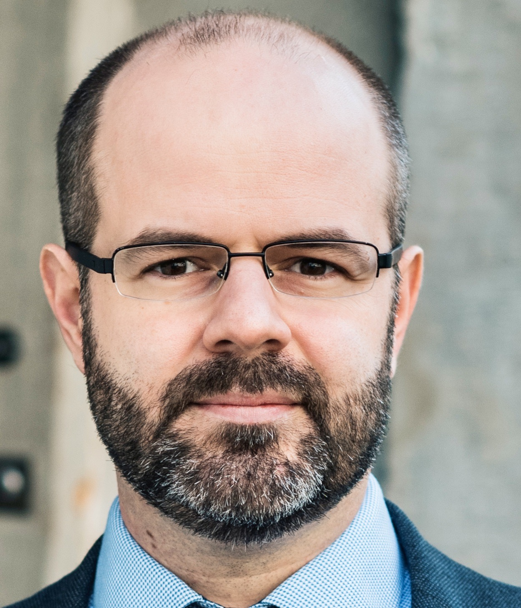
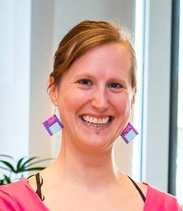
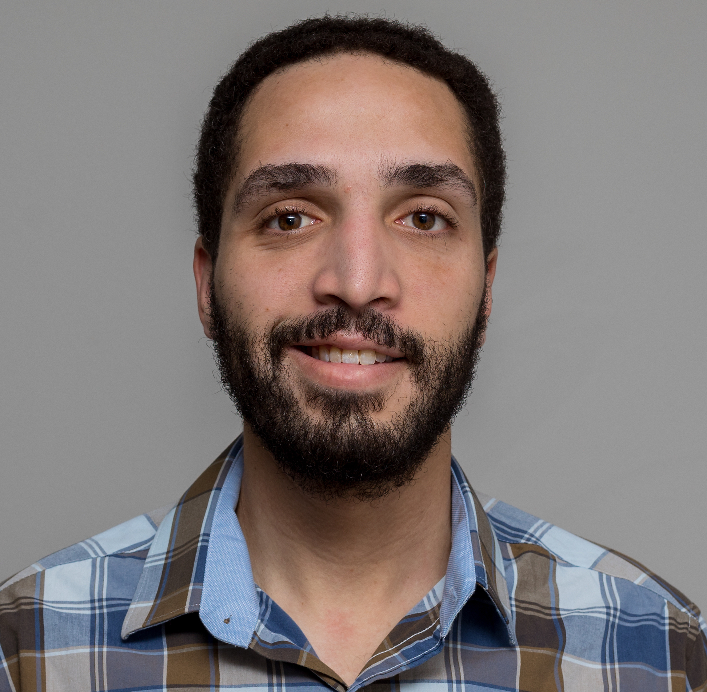
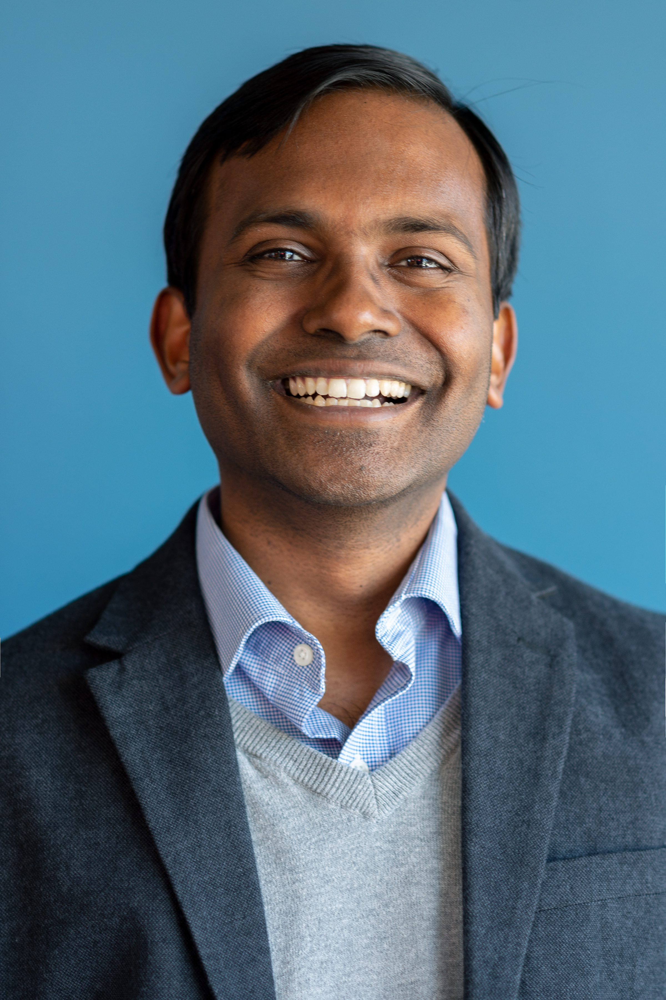
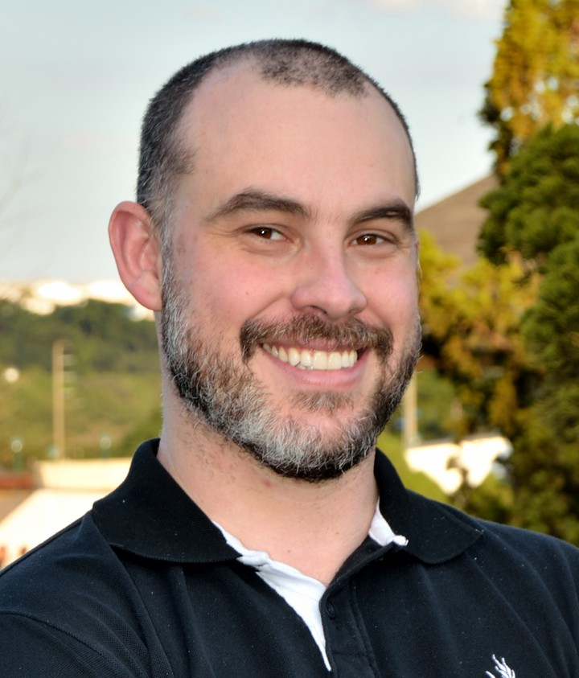

People have been building complex software for over sixty years.
Researchers have been studying what they make and how they make it for almost as long,
but most working programmers don't know what they have discovered,
or even what kinds of questions they can answer.
|
Maurício Aniche:
how code coverage can be used and abused to guide testing.
Maurício is Tech Academy Lead at Adyen and an Assistant Professor at Delft University of Technology in the Netherlands.
|
 |
Alberto Bacchelli:
how code review works (and doesn't) in the real world.
Alberto is an Associate Professor at the University of Zurich in Switzerland.
|
|
Kelly Blincoe:
the effects of destructive criticism in code review.
Kelly is a Senior Lecturer at the University of Auckland in New Zealand.
|
|
Denae Ford Robinson:
online community and safety in software engineering.
Denae is a Research Scientist at Microsoft Research in the United States.
|
|
Davide Fucci:
does test-driven development actually have any benefits?.
Davide is an Assistant Professor at the Blekinge Institute of Technology in Sweden.
|
 |
Felienne Hermans:
how patterns in variable names can make code easier to read.
Felienne is an Associate Professor at Leiden University in the Netherlands.
|
|
Brittany Johnson-Matthews:
developing equitable software.
Brittany is an Assistant Professor at George Mason University in the United States.
|
 |
Shane McIntosh:
build systems.
Shane is an Associate Professor at the University of Waterloo in Canada.
|
 |
Mei Nagappan:
bias in evaluating code contributions.
Mei is an Assistant Professor at the University of Waterloo in Canada.
|
|
Paige Rodeghero:
what we've learned about remote onboarding during the pandemic.
Paige is an Assistant Professor at Clemson University in the United States.
|
 |
Igor Steinmacher:
negotiation and padding in software project estimates.
Igor is an Assistant Professor at the Federal University of Technology - Paraná in Brazil.
|
|
Kathryn Stolee:
to search or not to search, depends on the question.
Kathryn is an Associate Professor at North Carolina State University.
|
|
Margaret-Anne Storey:
what does "productivity" actually mean for developers?.
Peggy is a Professor at the University of Victoria in Canada.
|
 |
Christoph Treude:
automatically enhancing error messages.
Christoph is a Senior Lecturer at the University of Melbourne in Australia.
|
|
Mairieli Wessel:
how people really use GitHub Actions.
Mairieli is a postdoctoral researcher at Delft University of Technology in the Netherlands.
|